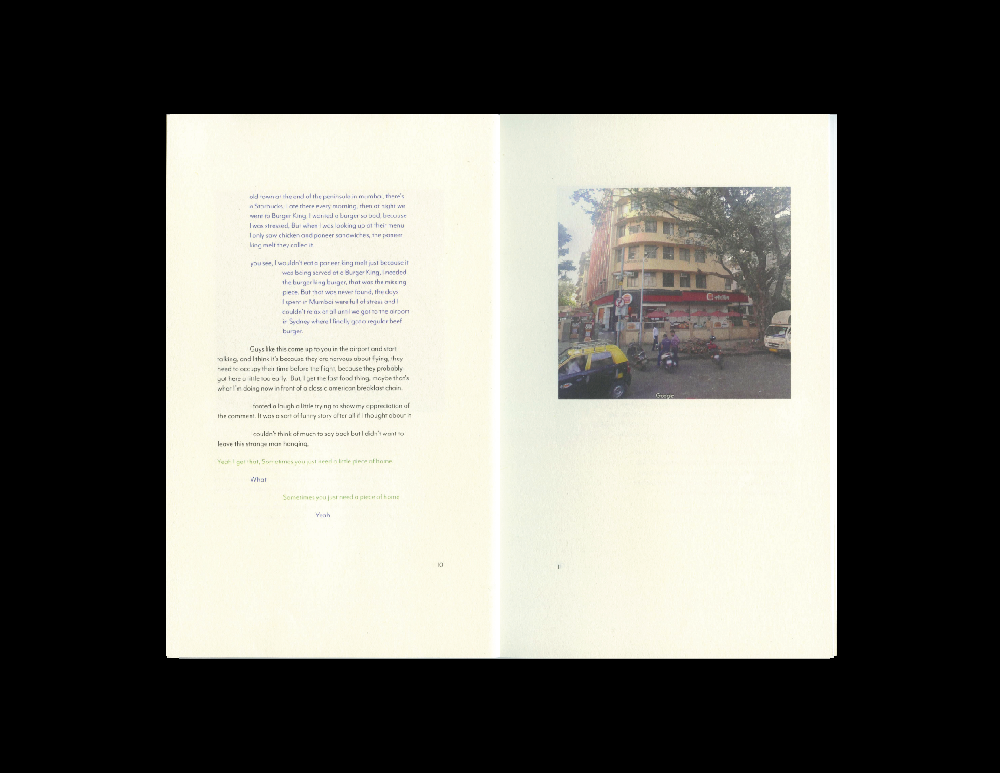
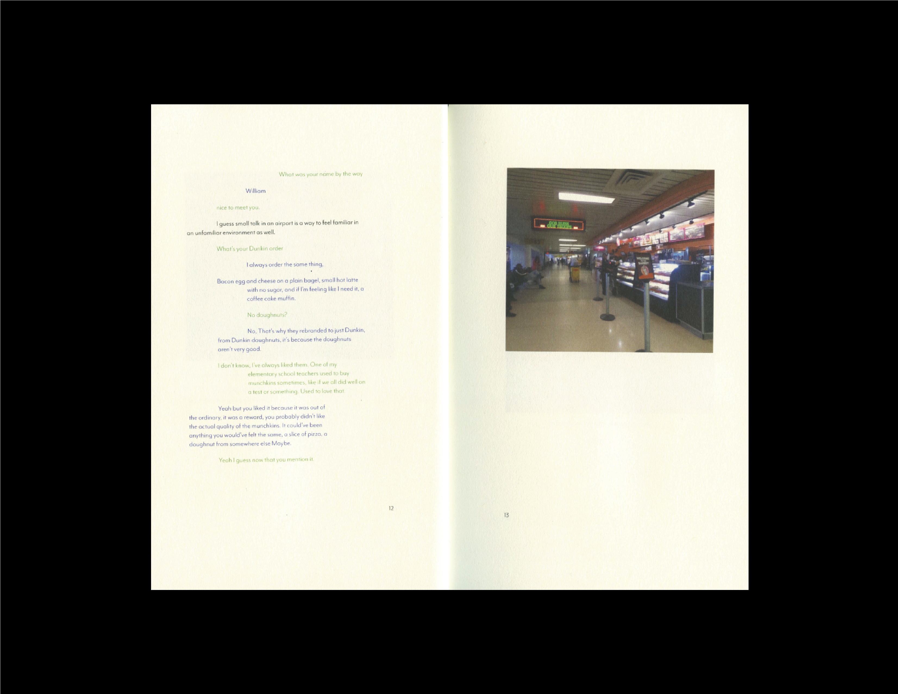
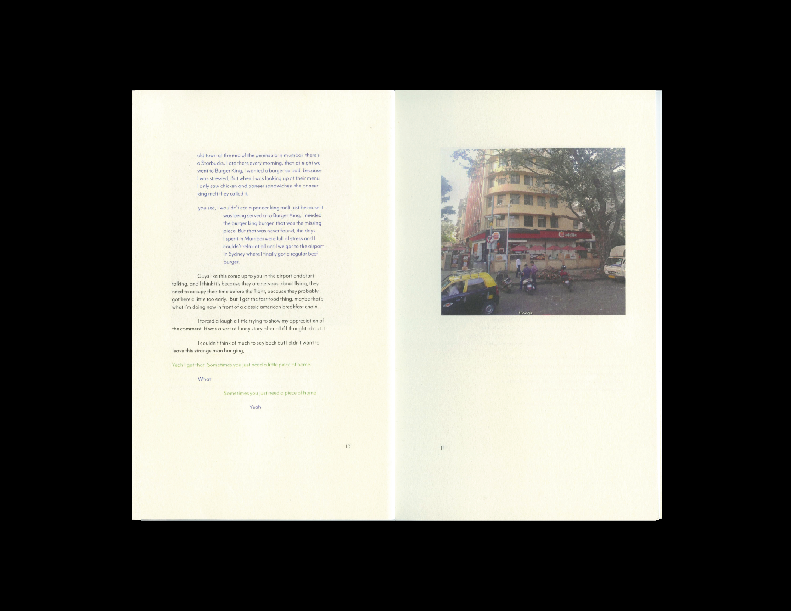
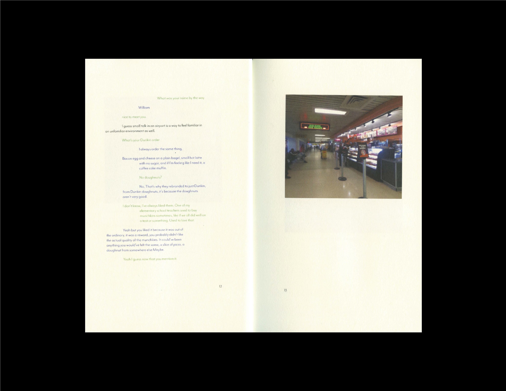
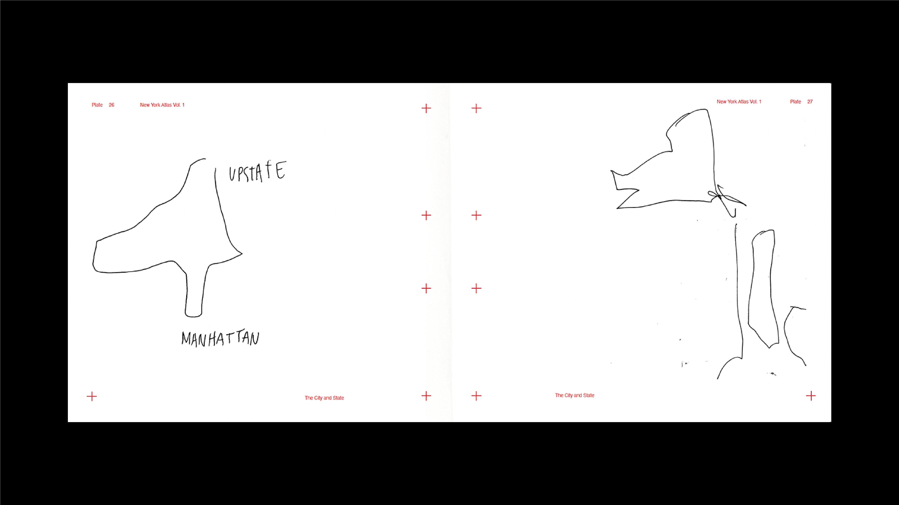
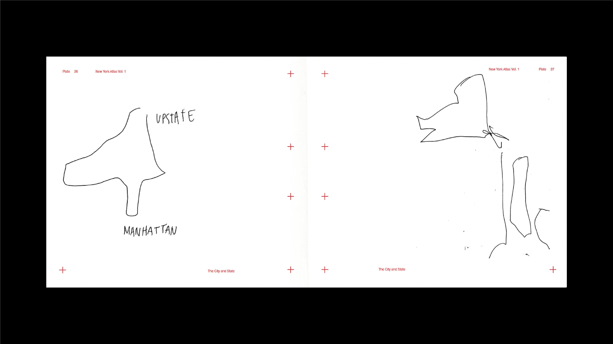

Overview
New York, New York explores how personal and collective memory shape urban identity through an interconnected series of works. The project examines the city as both lived experience and perpetual self-image, using various media to probe the intersection of private memory and public space. From Google Street View's algorithmic captures to stranger-drawn maps, from long-exposure photographs to train window observations, each piece reveals how the city exists simultaneously as geographic reality and psychological construct. The work deliberately exposes the limitations and possibilities of preservation, using both digital and analog media to explore how memory, like the city itself, is both a shared construction and a constantly evolving fragment.


 





 
